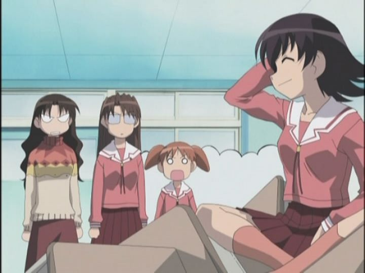

If someone asked you for a recommendation for a good comedy anime, what would you suggest? There are plenty of anime shows to choose from; comedy is as synonymous with anime as samurai action, space robots, and big-boobed fanservice, right? But while anime spans just about every genre, and while we could pick a few good choices for nearly any of those genres, comedy is one of the hardest to pin. It's difficult to be funny, and foreign comedy has a different sense of humor that doesn't always translate. Even when an anime series is purely comedy and nothing else, it's a coin toss as to whether or not a viewer will do more than politely smile at its jokes.So the correct answer is "Nichijou." But if you were an anime fan pre-2011, the common answer would be to refer to 2002's "Azumanga Daioh." The zany but calming comedy about a bunch of high-school girls is instantly lovable, successfully using cuteness before "moe" became enough of a trend to be regular otaku vocabulary. It's based on a 4-koma manga series, essentially the Japanese version of Sunday newspaper comics, and its jokes are based around short skits that the whole family can (mostly) enjoy. Decades later, it doesn't hold up all that well, but it still works often enough on occasion to be worth bringing up.The biggest flaw with most comedy anime is the lack of a real plot. The story is about the everyday life of a group of teenage girls in school and their daily shenanigans. The show starts when new student Chiyo is introduced to the class, an adorable child genius about half the age of the others due to skipping grades. Other students include a hyper-active trouble-maker, a sleepy girl from country town Osaka, a serious girl self-concious of her weight, and a cool athletic star with a weakness for cute cats. Also two lead female teachers, one a slacker constantly trying to get out of work, or to show up the other, or else out-drink her after work. The 26-episode television series actually spans 3 years of time, ending with the bitter-sweet moment of the girls graduating, but giving us repeated winters, springs and summers before then. The type of scenarios you expect all occur. The students worry about homework and tests, wonder why the sky is blue, and ponder the originaition of Japanese kanji. There is no real thread to an overarching plot. Making the show occur over three years worsens the weaknesses, as many jokes or scenes are repeated. The students spend a night at a summer cottage not once, but three times. One student getting bit when trying to pet a stray cat is funny the first few times, but not ten times later. Sometimes, a character would do something stupid and random, at not provide a reason other than the audience was supposed to laugh. I kept wondering if the writers had run out of jokes and was trying to artificially stretch the show to twice its total length. And as expected, some of the jokes don't work out in English. Some are specific around the spelling or pronounciation of Japanese words. Some others use bizarre pop-culture references, such as "Lupin the Third" or a popular baseball player from the time the show was airing. One popular scene uses a line about a metaphysical cat looking like Japanese Prime Minister Mori; this is translated in the English dub as looking like Bill Clinton. Generally, the English writers did a respectible job trying to help the writing for English viewers, but a few jokes pass where it feels like I missed something. Jokes sometimes feel mean-spirited when one character teases another, or when they compare each other's breast sizes or weight. And it never felt quite right that while the cast was at a public co-ed high school, there were no male recurring characters, except for one creepy-but-well-meaning pervert teacher. I'm sure friendship among school girls isn't far off to this point of view, but it doesn't come off well in more recent culture. Visually, the show looks instantly dated from the bad transitions in the opening credits. Aside from looking old, there are other more practical problems. The students all wear the the same pink uniforms, and most of them have the same hair color and similar faces. Yes, it makes more sense not to have green-haired characters, but it also makes it really difficult to differentiate the main characters. Even with a few subtle differences, it's the voices that help distinguish them and their personalities, specifically the English dub, and this reason (and this reason alone) is why I would recommend the dub over the original Japanese. The animation varies, but generally is limited, in some cases to an extreme degree, such that I'd believe a given episode was really created within a week. I know production values don't need to be great for comedy, and it does what it needs to do, but there are times when it does effect enjoyment of the show. The music is a highlight however, shifting styles when scenes get dramatic, but otherwise soothing and memorable with a recorder and other school-band instruments.Despite what I've said so far, "Azumanga Daioh" does succeed in two important places: it's characters are lovable and the show is (sometimes) funny. Rather, it can be very funny. I would estimate that about 5%-10% of the runtime contained jokes that made me laugh out loud, sometimes falling on the floor. That might not seem like a lot, but its not unusual to not give more than barely a smile for an entire anime series, so this is pretty good. And the characters, even if simple archtypes, are memorable and adorable, and inevitably will seem like old friends. These happen to be the most important aspects of an anime comedy, so if that's what you are looking for, it's easy to recommend.For these reasons, I still consider "Azumanga Daioh" a classic, even if it isn't necessary a very good one. It reminds me of the old animated "Peanuts" and "Garfield" shows on American television: sure, they didn't look great and weren't always a laugh every minute, but they are still a fond memory of entertainment. "Azumanga" is mostly family-friendly with its content, and is a relaxing watch for anime clubs. Today, I would still recommend "Nichjou" as the reigning king of anime comedy, exceeding "Azumanga" in just about every way. But good anime comedies are rare, and even now, "Azumanga" would be easy to place in anyone's top five for the genre.
- "Ani" More reviews can be found at : https://2danicritic.github.io/ Previous review: review_Ayakashi_-_Samurai_Horror_Tales_-_Goblin_Cat Next review: review_Babylon